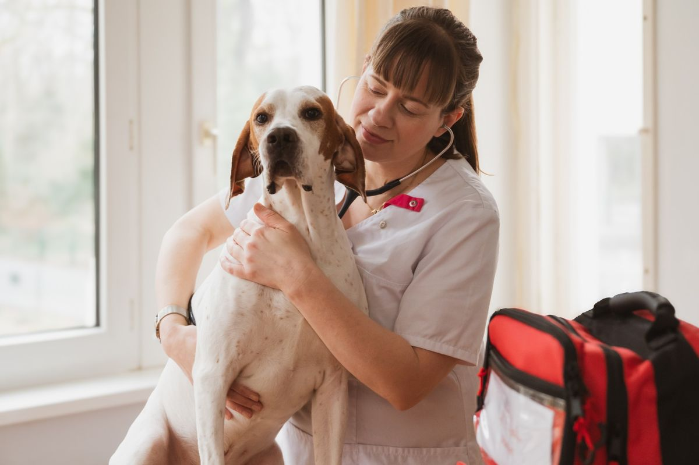

Ihre Tierärztin in Kreuzberg [Dr. Vorname Name]
Tierärztin und Gründerin von KiezVet und UrbanVet. [Ein Satz zu Ihrer Haltung, z. B.: Ich glaube, dass gute Medizin mit Ruhe und Vertrauen beginnt.]
Warum KiezVet
[Ihre Geschichte: Wie kam es zu UrbanVet, und warum jetzt eine Praxis im Bergmannkiez? 2–3 kurze Absätze in Ihren eigenen Worten.]
Als Einzelpraxis kenne ich jedes Tier und seine Geschichte. Sie erklären nicht bei jedem Besuch alles von vorn, und Ihr Tier begegnet immer demselben vertrauten Menschen, in der Praxis und zu Hause mit UrbanVet.
Ausbildung & Erfahrung
- [Studium der Tiermedizin, Universität, Jahr]
- [Promotion / Zusatzbezeichnung]
- [Stationen, z. B. Kleintierklinik, Jahre]
- Gründung von UrbanVet, mobile Tierarztpraxis in Berlin
- Mitglied der Tierärztekammer Berlin

[X] Jahre
ErfahrungDE · EN
Sprachen[Schwerpunkt]
Fachgebiet
KiezVet × UrbanVet
Wenn Ihr Tier nicht zu uns kommen kann, kommen wir zu Ihnen.
Hausbesuche für ängstliche, ältere oder immobile Tiere, Notfälle außerhalb der Sprechzeiten und ein würdevoller Abschied zu Hause. Mit unserem mobilen Dienst UrbanVet.